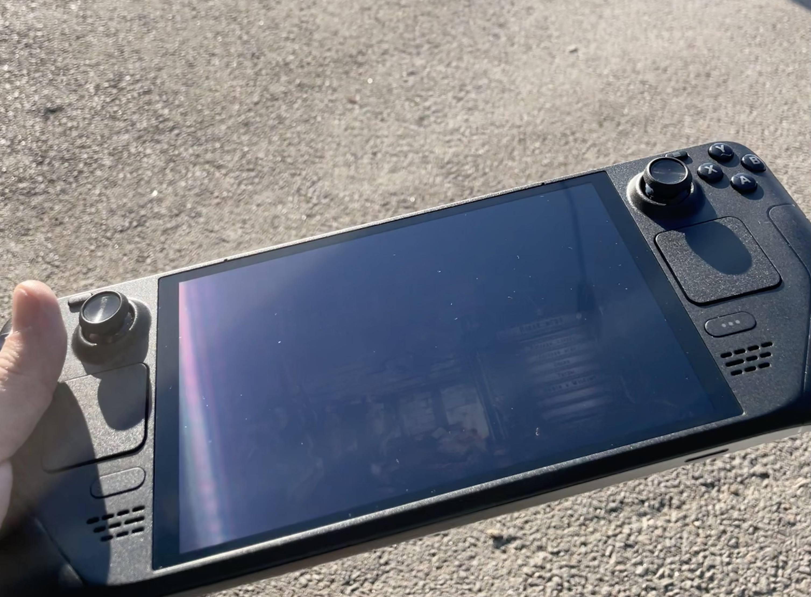
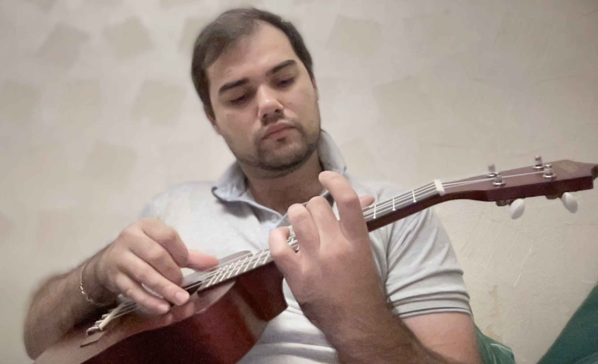

Наразі є можливість підбирати аккорди по кнопкам, побудувати аккорд затискаючи струни. Наразі лише для укулеле, але скоро й для інших інструментів - гітара, бас-гітара, баритон, гіталеле..

Нотатки про технології, геймдев, музику та життєві спостереження.
Створив інтерактивну сторінку для підбору аккордів
Наразі є можливість підбирати аккорди по кнопкам, побудувати аккорд затискаючи струни. Наразі лише для укулеле, але скоро й для інших інструментів - гітара, бас-гітара, баритон, гіталеле..
Погравши достатньо часу на укулеле Aria, яку мені позичили, нарешті подарували мені укулеле моделі Enya EUS-25D Bl. Що можу сказати ? Вона чудова!
Я вважаю, що це ідеальний інструмент для початківця. Вона має приємний звук, зручний гриф та виглядає дуже стильно. Попередньо достатеьо часу провів вивчаючи різні моделі та бренди. Наприклад Parksons UK24Z - непогане укулеле, по звуку краще ніж Aria, має класичні кольори. Так як, я вважав що кольори які відрізняються від "класики" - це просто фішка дизайну, особливо вичурно яскраві кольори.
Гавайський мотив на фоні імпровізованих пальм
Але коли мені порекомендували цю модель, а потім я побачив її в музичному магизині, як то кажуть - "в живу".. Це щось, колір спокійний у палітрі дерева, але при цьому він має глибину і грає на світлі. Гриф тримати - одне задоволення, він заокруглений і дуже зручний для моїх рук. Звук - це окрема історія, він теплий, насичений і має приємну резонансність.Після п'яти років у технічній підтримці я зрозумів, що мій досвід пошуку неочевидних багів та любов до ігор можна спробувати об'єднати у щось більше...
Робота в технічній підтримці L2/L3 навчила мене головному: користувачі можуть зламати систему способами, які розробникам навіть не снилися. Коли ти роками шукаєш причину, чому у клієнта не сходиться звіт у базі даних, ти мимоволі стаєш тестувальником.
Я граю все своє життя у різні категорії ігор. Я бачу, як розвивається індустрія, і часто ловлю себе на думці, що аналізую баги в іграх замість того, щоб просто грати. Перехід у Game QA для мене — це логічний крок. Це можливість застосувати мій досвід траблшутингу там, де створюються світи.
Відколи у мене з'явився Steam Deck, мій підхід до ігор змінився. Це не просто портативна консоль, це повноцінний Linux-ПК у кишені...
Я завжди був прихильником стаціонарного геймінгу. Але Steam Deck змінив правила гри. Відкритість системи на базі Arch Linux дозволяє робити з нею неймовірні речі.
Грай де завгодно! Наприклад неподалік стадіону
Для мене, як людини з технічним бекграундом, можливість зайти в режим робочого столу, підправити конфіги або встановити сторонні лаунчери (через Heroic) приносить не менше задоволення, ніж самі ігри. Це той випадок, коли пристрій ідеально балансує між "працює з коробки" та "можна зламати і перезібрати".
Особливо круто проходити на ньому інді-тайтли або перепроходити класику, лежачи на дивані. А от для важких AAA-проєктів все ж краще підходить PS5.
Мінуси звісно очевидні - якщо батарея Вашої консолі вже не витягує більше години - це проблема. Звісно не забуваємо про павербанк, який збільшує нашу вагу.. Також у ясний день все виглядатиме так
Максимальна яркість не рятує
Звісно, хто планує його використовувати на вулиці, має бути до цього готовим. Ніхто не відміняв можливість грати на лавочці десь у тіні, де грати стає набагато зручніше.Технічна підтримка — це не лише про те, як перезавантажити роутер. Це про вміння перекладати з "людської" мови на мову баз даних...
Багато хто недооцінює роль Support Specialist. На рівні L2/L3 ти стаєш мостом між користувачем, у якого "все зламалося", і розробником, якому потрібні чіткі кроки для відтворення (STR).
Моя робота з обліковими системами навчила мене тому, що 90% проблем криються в базі даних. Уміння швидко написати правильний `SELECT` запит, знайти загублену транзакцію чи виправити пошкоджені зв'язки між таблицями економить години роботи всій команді.
"Найкращий баг-репорт той, який супроводжується логами і дампами бази."
Цей досвід неймовірно загартовує нерви і вчить системному мисленню.
Укулеле — це невеличкий інструмент, який може викликати захоплення у всіх, хто пробує грати на ньому. Але що таке укулеле насправді?
Почнемо зі статті великої колись Wikipedia.
Укулеле - це чотирьохструнний щипковий музичний інструмент, гавайська різновидність гітари,
створена на основі португальського мачете. З'явившись на Гаваях у XIX столітті,
інструмент здобув світову популярність завдяки компактності та яскравому звучанню.
Вибачте, за зайву нотацію, але потрібно знати хоча б БАЗУ. Взявши до рук укулеле, я був здивований тим, наскільки вона відрізняється від гітари. Коли в руки береш гітару, ти відразу відчуваєш її вагу, розмір і глибину звуку. Укулеле ж - це як маленький друг, який завжди поруч і готовий до гри.

Граю The Last of Us theme на укулеле Aria ACU-A1
Вона легка, компактна і має свій унікальний тембр, який не можна сплутати ні з чим іншим. Це не просто "маленька гітара", це інструмент зі своїм характером і душею.Спочатку я чисто грався, перебирав струни, намагаючись зрозуміти, як вона звучить. Потім спробував по табулатурі зіграти кілька простих мелодій, наприклад тему з мультсеріалу Губка Боб .. Потім спробував зіграти ще з декількох мультфільмів й закинув її.
Через деякий тривалий час, коли я завершував проходження The Last of Us Part Two, мені захотілось все ж таки спробувати зіграти щось серйозніше, розібратись детальніше. Спробував зіграти один раз, два три... І в результаті, я не міг відірватись від інструменту.
Основна тема гри The Last of Us на укулеле by The Ukulele Teacher Погравшись з нотами, я зрозумів, що потрібно вивчати аккорди. вивчив основні аккорди C, G, Am, F - дуже просто затискаються, звучать приємно. І поступово, по-троху це все вилилось у велике хоббі.

Базові акорди на укулеле